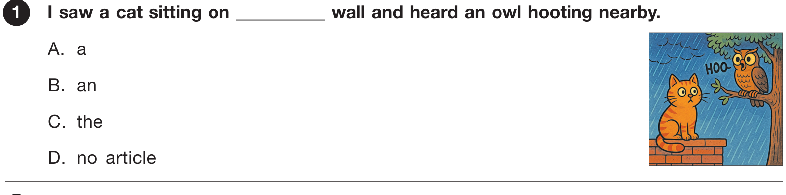
For questions 1 to 7, choose the correct option to fill in the blank.
I saw a cat sitting on __________ wall and heard an owl hooting nearby.
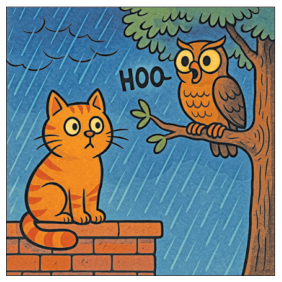
a
an
the
no article
The definite article “the” is to be used to refer to a specific or identifiable item (wall) that is known to the speaker and listener.
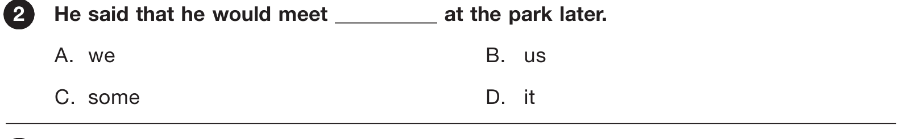
For questions 1 to 7, choose the correct option to fill in the blank.
He said that he would meet __________ at the park later.
we
us
some
it
The personal pronoun “us” is to be used to refer to the speaker and one or more people who receive the action of the verb (meet).
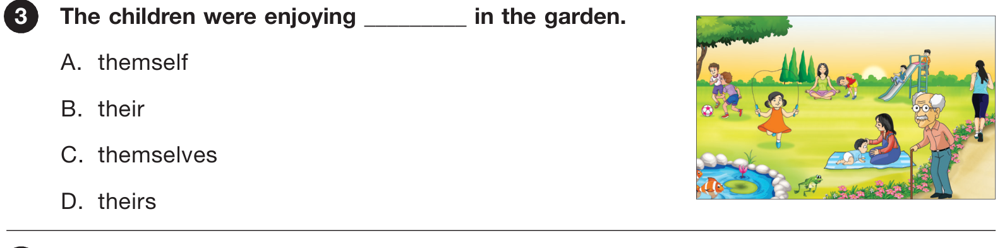
For questions 1 to 7, choose the correct option to fill in the blank.
The children were enjoying _________ in the garden.
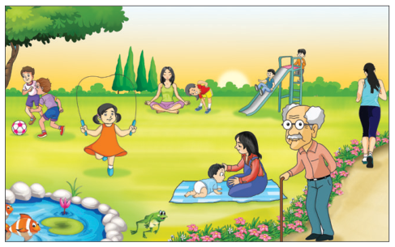
themself
their
themselves
theirs
The reflexive pronoun “themselves” is to be used to refer back to the subject (the children) in the sentence.
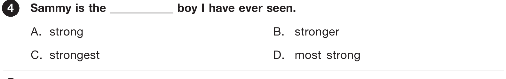
For questions 1 to 7, choose the correct option to fill in the blank.
Sammy is the ___________ boy I have ever seen.
strong
stronger
strongest
most strong
The superlative degree of adjective “strongest” is to be used to show that Sammy has more strength than all the other boys.
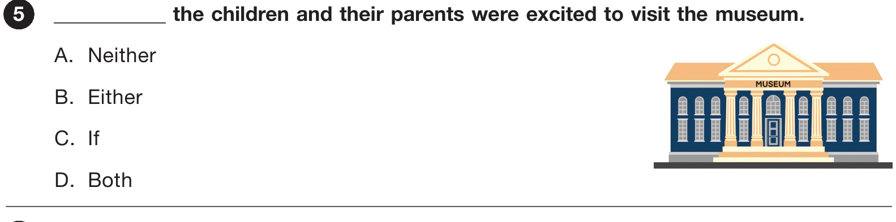
For questions 1 to 7, choose the correct option to fill in the blank.
___________ the children and their parents were excited to visit the museum.
Neither
Either
If
Both
The correlative conjunction “both” is to be used with “and” to connect two subjects (children and their parents).
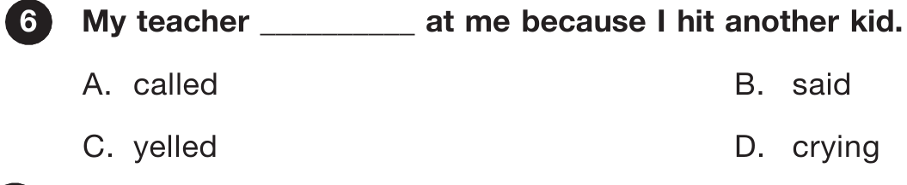
For questions 1 to 7, choose the correct option to fill in the blank.
My teacher __________ at me because I hit another kid.
called
said
yelled
crying
The correct verb to be used is “yelled” because it means ‘to speak loudly, usually in anger or with strong emotion’.
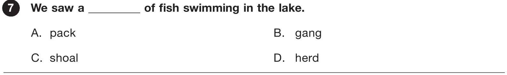
For questions 1 to 7, choose the correct option to fill in the blank.
We saw a _________ of fish swimming in the lake.
pack
gang
shoal
herd
The collective noun “shoal” is to be used because a group of fish is called a shoal.
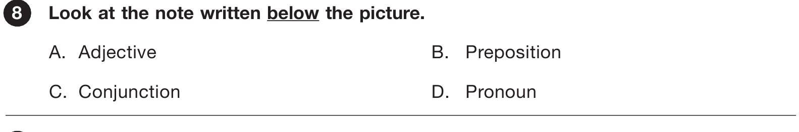
For questions 8 and 9, choose the correct option for the underlined word.
Adjective
Preposition
Conjunction
Pronoun
The underlined word “below” is a preposition because it shows the position of something.
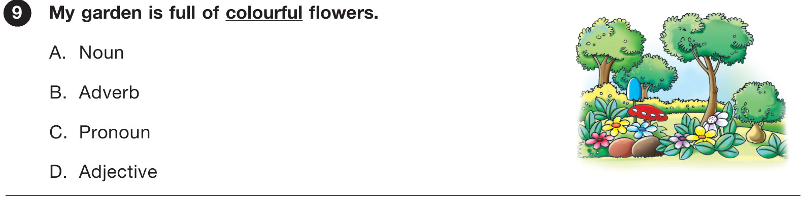
For questions 8 and 9, choose the correct option for the underlined word.
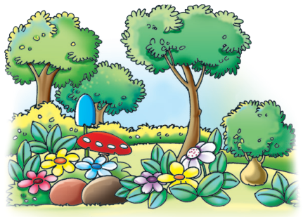
Noun
Adverb
Pronoun
Adjective
The underlined word “colourful” is an adjective because it describes the noun (flowers) and tells us more about its appearance.
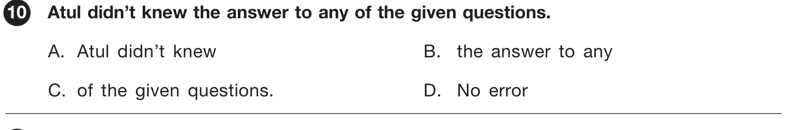
For questions 10 and 11, choose the part of the sentence that has an error.
Atul didn’t knew the answer to any of the given questions.
Atul didn’t knew
the answer to any
of the given questions.
No error
The correct sentence is “Atul didn’t know the answer to any of the given questions.” Hence, option A has the error.
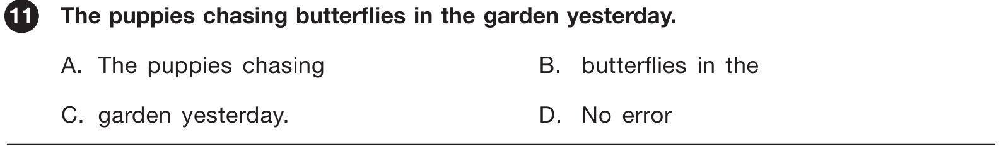
For questions 10 and 11, choose the part of the sentence that has an error.
The puppies chasing butterflies in the garden yesterday.
The puppies chasing
butterflies in the
garden yesterday.
No error
The correct sentence is “The puppies were chasing butterflies in the garden yesterday.” Hence, option A has the error.
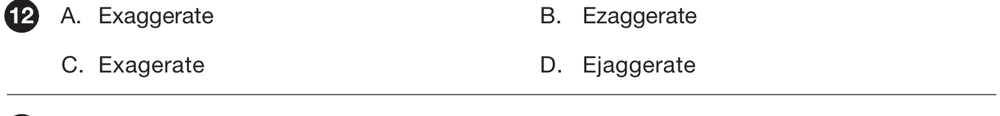
For questions 12 and 13, choose the option with correct spelling.
Exaggerate
Ezaggerate
Exagerate
Ejaggerate
The correct spelling is “exaggerate”, which means ‘to make something seem bigger or more important than it really is’.
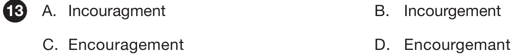
For questions 12 and 13, choose the option with correct spelling.
Incouragment
Incourgement
Encouragement
Encourgemant
The correct spelling is “encouragement”, which means ‘support or confidence given to someone’.
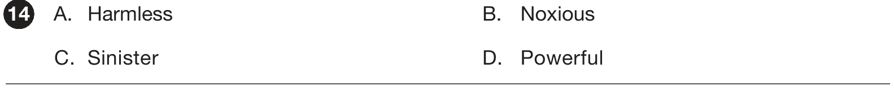
Choose the correct synonym of benign.
Harmless
Noxious
Sinister
Powerful
The correct synonym of “benign” is “harmless”, because they both mean ‘not causing harm or danger’.
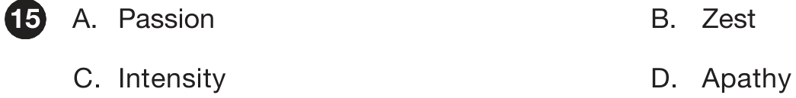
Choose the correct antonym of excitement.
Passion
Zest
Intensity
Apathy
The correct antonym of “excitement” is “apathy” because excitement means ‘strong interest’, while apathy means ‘lack of interest’.
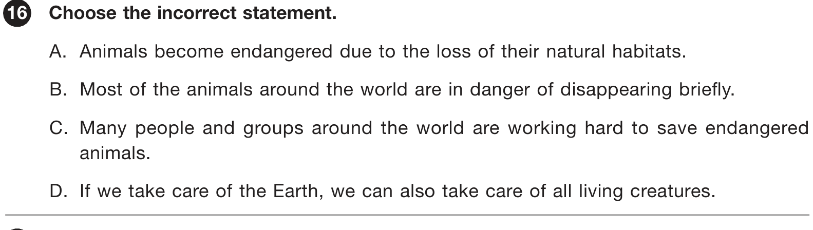
For questions 16 to 20, read the passage and answer the questions that follow.
Many animals around the world are in danger of disappearing forever. These animals are called endangered species. They are few in number and may become extinct if we do not help them. When an animal becomes extinct, it means there are no more of that animal left in the world.
There are many reasons why animals become endangered. One big reason is the loss of their natural homes, or habitats. Forests are cut down, rivers get polluted, and land is used for construction. This means animals have no place to live, find food, or raise their young ones.
Another reason is hunting and poaching. Some people hunt animals for their skin, horns, or teeth to sell them for money. Animals like tigers, elephants, and rhinos are often harmed for these reasons. Climate change is also a big problem. It causes changes in weather, making it hard for some animals to survive.
Let’s look at a few endangered animals. The giant panda, found in China, is endangered because its bamboo forests are being cut down. The blue whale, the largest animal on Earth, is endangered due to ocean pollution and hunting in the past. The Indian tiger, one of the most beautiful animals, is also in danger because of loss of forest area and illegal hunting.
But there is hope. Many people and groups around the world are working hard to save endangered animals. They protect forests and rivers, stop illegal hunting, and create safe parks where animals can live freely. These parks are called wildlife sanctuaries and national parks.
We can also help in small ways. We can learn about animals, protect nature, and never buy things made from animal parts. By taking care of the Earth, we are also taking care of all living creatures.
Choose the incorrect statement.
Animals become endangered due to the loss of their natural habitats.
Most of the animals around the world are in danger of disappearing briefly.
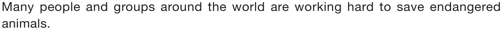
If we take care of the Earth, we can also take care of all living creatures.
As per paragraph 1 of the passage, many animals around the world are in danger of disappearing forever. Hence, option B is the correct answer.
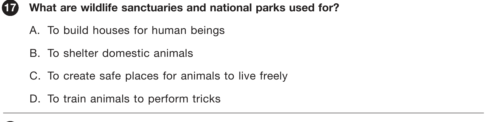
For questions 16 to 20, read the passage and answer the questions that follow.
Many animals around the world are in danger of disappearing forever. These animals are called endangered species. They are few in number and may become extinct if we do not help them. When an animal becomes extinct, it means there are no more of that animal left in the world.
There are many reasons why animals become endangered. One big reason is the loss of their natural homes, or habitats. Forests are cut down, rivers get polluted, and land is used for construction. This means animals have no place to live, find food, or raise their young ones.
Another reason is hunting and poaching. Some people hunt animals for their skin, horns, or teeth to sell them for money. Animals like tigers, elephants, and rhinos are often harmed for these reasons. Climate change is also a big problem. It causes changes in weather, making it hard for some animals to survive.
Let’s look at a few endangered animals. The giant panda, found in China, is endangered because its bamboo forests are being cut down. The blue whale, the largest animal on Earth, is endangered due to ocean pollution and hunting in the past. The Indian tiger, one of the most beautiful animals, is also in danger because of loss of forest area and illegal hunting.
But there is hope. Many people and groups around the world are working hard to save endangered animals. They protect forests and rivers, stop illegal hunting, and create safe parks where animals can live freely. These parks are called wildlife sanctuaries and national parks.
We can also help in small ways. We can learn about animals, protect nature, and never buy things made from animal parts. By taking care of the Earth, we are also taking care of all living creatures.
What are wildlife sanctuaries and national parks used for?
To build houses for human beings
To shelter domestic animals
To create safe places for animals to live freely
To train animals to perform tricks
According to paragraph 5, wildlife sanctuaries and national parks are used to create safe places for animals to live freely.
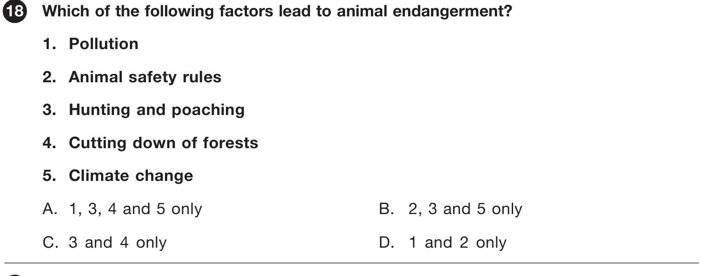
For questions 16 to 20, read the passage and answer the questions that follow.
Many animals around the world are in danger of disappearing forever. These animals are called endangered species. They are few in number and may become extinct if we do not help them. When an animal becomes extinct, it means there are no more of that animal left in the world.
There are many reasons why animals become endangered. One big reason is the loss of their natural homes, or habitats. Forests are cut down, rivers get polluted, and land is used for construction. This means animals have no place to live, find food, or raise their young ones.
Another reason is hunting and poaching. Some people hunt animals for their skin, horns, or teeth to sell them for money. Animals like tigers, elephants, and rhinos are often harmed for these reasons. Climate change is also a big problem. It causes changes in weather, making it hard for some animals to survive.
Let’s look at a few endangered animals. The giant panda, found in China, is endangered because its bamboo forests are being cut down. The blue whale, the largest animal on Earth, is endangered due to ocean pollution and hunting in the past. The Indian tiger, one of the most beautiful animals, is also in danger because of loss of forest area and illegal hunting.
But there is hope. Many people and groups around the world are working hard to save endangered animals. They protect forests and rivers, stop illegal hunting, and create safe parks where animals can live freely. These parks are called wildlife sanctuaries and national parks.
We can also help in small ways. We can learn about animals, protect nature, and never buy things made from animal parts. By taking care of the Earth, we are also taking care of all living creatures.
Which of the following factors lead to animal endangerment?
1. Pollution
2. Animal safety rules
3. Hunting and poaching
4. Cutting down of forests
5. Climate change
1, 3, 4 and 5 only
2, 3 and 5 only
3 and 4 only
1 and 2 only
According to paragraph 2 and 3, pollution, hunting and poaching, cutting down of forest, and climate change lead to animal endangerment. Hence, option ‘A’ is the correct answer.
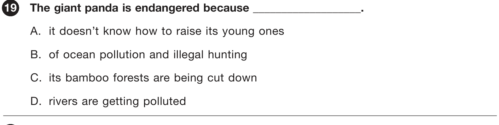
For questions 16 to 20, read the passage and answer the questions that follow.
Many animals around the world are in danger of disappearing forever. These animals are called endangered species. They are few in number and may become extinct if we do not help them. When an animal becomes extinct, it means there are no more of that animal left in the world.
There are many reasons why animals become endangered. One big reason is the loss of their natural homes, or habitats. Forests are cut down, rivers get polluted, and land is used for construction. This means animals have no place to live, find food, or raise their young ones.
Another reason is hunting and poaching. Some people hunt animals for their skin, horns, or teeth to sell them for money. Animals like tigers, elephants, and rhinos are often harmed for these reasons. Climate change is also a big problem. It causes changes in weather, making it hard for some animals to survive.
Let’s look at a few endangered animals. The giant panda, found in China, is endangered because its bamboo forests are being cut down. The blue whale, the largest animal on Earth, is endangered due to ocean pollution and hunting in the past. The Indian tiger, one of the most beautiful animals, is also in danger because of loss of forest area and illegal hunting.
But there is hope. Many people and groups around the world are working hard to save endangered animals. They protect forests and rivers, stop illegal hunting, and create safe parks where animals can live freely. These parks are called wildlife sanctuaries and national parks.
We can also help in small ways. We can learn about animals, protect nature, and never buy things made from animal parts. By taking care of the Earth, we are also taking care of all living creatures.
The giant panda is endangered because ___________________.
it doesn’t know how to raise its young ones
of ocean pollution and illegal hunting
its bamboo forests are being cut down
rivers are getting polluted
As stated in paragraph 4, the giant panda is endangered because its bamboo forests are being cut down.
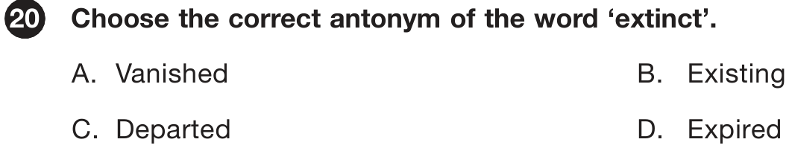
For questions 16 to 20, read the passage and answer the questions that follow.
Many animals around the world are in danger of disappearing forever. These animals are called endangered species. They are few in number and may become extinct if we do not help them. When an animal becomes extinct, it means there are no more of that animal left in the world.
There are many reasons why animals become endangered. One big reason is the loss of their natural homes, or habitats. Forests are cut down, rivers get polluted, and land is used for construction. This means animals have no place to live, find food, or raise their young ones.
Another reason is hunting and poaching. Some people hunt animals for their skin, horns, or teeth to sell them for money. Animals like tigers, elephants, and rhinos are often harmed for these reasons. Climate change is also a big problem. It causes changes in weather, making it hard for some animals to survive.
Let’s look at a few endangered animals. The giant panda, found in China, is endangered because its bamboo forests are being cut down. The blue whale, the largest animal on Earth, is endangered due to ocean pollution and hunting in the past. The Indian tiger, one of the most beautiful animals, is also in danger because of loss of forest area and illegal hunting.
But there is hope. Many people and groups around the world are working hard to save endangered animals. They protect forests and rivers, stop illegal hunting, and create safe parks where animals can live freely. These parks are called wildlife sanctuaries and national parks.
We can also help in small ways. We can learn about animals, protect nature, and never buy things made from animal parts. By taking care of the Earth, we are also taking care of all living creatures.
Choose the correct antonym of the word ‘extinct’.
Vanished
Existing
Departed
Expired
The correct antonym of “extinct” is “existing” because extinct means ‘no longer living’, while existing means ‘still alive’.
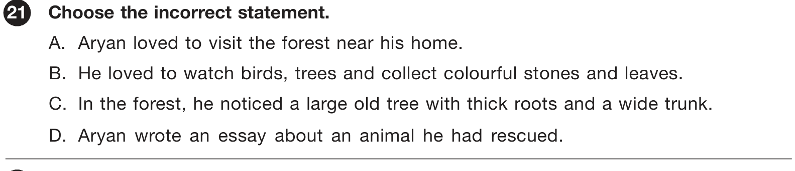
For questions 21 to 25, read the passage and answer the questions that follow.
Aryan was a curious 10-year-old boy who loved exploring nature. He lived in a small village surrounded by green fields and tall trees. His favourite place to visit was the forest near his home. There, he would watch birds, climb trees, and collect colourful stones and leaves.
One sunny afternoon, Aryan went deeper into the forest than ever before. As he walked, he noticed a large old tree with thick roots and a wide trunk. It looked different from all the other trees. He walked closer and saw something strange — a small wooden door carved into the trunk!
Aryan knocked gently. To his surprise, the door opened with a creak. Inside, he saw a cozy room with tiny chairs, bookshelves, and glowing lights. Out came a little creature with pointy ears and a kind face. “Hello! I’m Tiko, the forest elf,” said the tiny being.
Aryan’s eyes widened in wonder. “Is this your home?” said Aryan.
“Yes,” said Tiko. “This is a secret library where I collect stories from the forest. Only those who truly love nature can find it.”
Tiko invited Aryan in. Inside the tree, there were shelves full of glowing books. “Each book tells the story of an animal, a plant, or a forest secret,” explained Tiko. “Would you like to add a story?”
Aryan was excited. He wrote a story about a bird he had rescued a week before. Tiko smiled and said, “Thank you! You are now a Guardian of the Forest.” Suddenly, the tree glowed brightly. Tiko gave Aryan a tiny wooden leaf. “This is your key. If you ever need help or want to read more stories, the tree will welcome you.”
Aryan left the forest with a big smile. From that day on, he took even better care of the plants and animals around him. He also told stories about the forest to his friends and how important it is to protect nature.
Choose the incorrect statement.
Aryan loved to visit the forest near his home.
He loved to watch birds, trees and collect colourful stones and leaves.
In the forest, he noticed a large old tree with thick roots and a wide trunk.
Aryan wrote an essay about an animal he had rescued.
As per the passage, Aryan wrote a story about a bird he had rescued. Hence, option D is the correct answer.
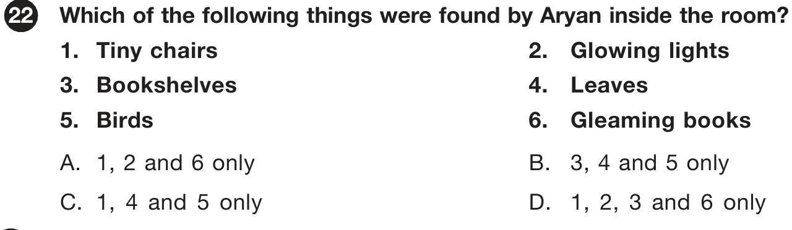
For questions 21 to 25, read the passage and answer the questions that follow.
Aryan was a curious 10-year-old boy who loved exploring nature. He lived in a small village surrounded by green fields and tall trees. His favourite place to visit was the forest near his home. There, he would watch birds, climb trees, and collect colourful stones and leaves.
One sunny afternoon, Aryan went deeper into the forest than ever before. As he walked, he noticed a large old tree with thick roots and a wide trunk. It looked different from all the other trees. He walked closer and saw something strange — a small wooden door carved into the trunk!
Aryan knocked gently. To his surprise, the door opened with a creak. Inside, he saw a cozy room with tiny chairs, bookshelves, and glowing lights. Out came a little creature with pointy ears and a kind face. “Hello! I’m Tiko, the forest elf,” said the tiny being.
Aryan’s eyes widened in wonder. “Is this your home?” said Aryan.
“Yes,” said Tiko. “This is a secret library where I collect stories from the forest. Only those who truly love nature can find it.”
Tiko invited Aryan in. Inside the tree, there were shelves full of glowing books. “Each book tells the story of an animal, a plant, or a forest secret,” explained Tiko. “Would you like to add a story?”
Aryan was excited. He wrote a story about a bird he had rescued a week before. Tiko smiled and said, “Thank you! You are now a Guardian of the Forest.” Suddenly, the tree glowed brightly. Tiko gave Aryan a tiny wooden leaf. “This is your key. If you ever need help or want to read more stories, the tree will welcome you.”
Aryan left the forest with a big smile. From that day on, he took even better care of the plants and animals around him. He also told stories about the forest to his friends and how important it is to protect nature.
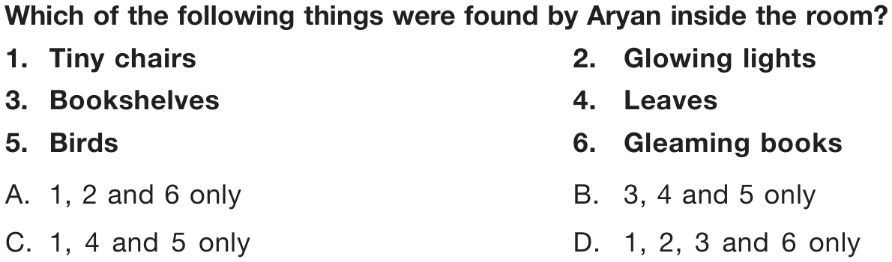
Option A
Option B
Option C
Option D
According to the passage, Aryan found tiny chairs, glowing lights, bookshelves, and glowing books inside the room. Hence, option D is the correct answer.
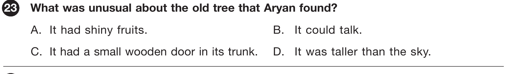
For questions 21 to 25, read the passage and answer the questions that follow.
Aryan was a curious 10-year-old boy who loved exploring nature. He lived in a small village surrounded by green fields and tall trees. His favourite place to visit was the forest near his home. There, he would watch birds, climb trees, and collect colourful stones and leaves.
One sunny afternoon, Aryan went deeper into the forest than ever before. As he walked, he noticed a large old tree with thick roots and a wide trunk. It looked different from all the other trees. He walked closer and saw something strange — a small wooden door carved into the trunk!
Aryan knocked gently. To his surprise, the door opened with a creak. Inside, he saw a cozy room with tiny chairs, bookshelves, and glowing lights. Out came a little creature with pointy ears and a kind face. “Hello! I’m Tiko, the forest elf,” said the tiny being.
Aryan’s eyes widened in wonder. “Is this your home?” said Aryan.
“Yes,” said Tiko. “This is a secret library where I collect stories from the forest. Only those who truly love nature can find it.”
Tiko invited Aryan in. Inside the tree, there were shelves full of glowing books. “Each book tells the story of an animal, a plant, or a forest secret,” explained Tiko. “Would you like to add a story?”
Aryan was excited. He wrote a story about a bird he had rescued a week before. Tiko smiled and said, “Thank you! You are now a Guardian of the Forest.” Suddenly, the tree glowed brightly. Tiko gave Aryan a tiny wooden leaf. “This is your key. If you ever need help or want to read more stories, the tree will welcome you.”
Aryan left the forest with a big smile. From that day on, he took even better care of the plants and animals around him. He also told stories about the forest to his friends and how important it is to protect nature.
What was unusual about the old tree that Aryan found?
It had shiny fruits.
It could talk.
It had a small wooden door in its trunk.
It was taller than the sky.
According to the passage, the old tree that Aryan found had a small wooden door in its trunk.
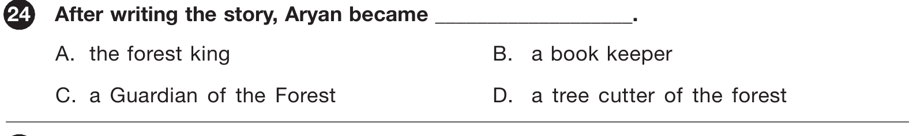
For questions 21 to 25, read the passage and answer the questions that follow.
Aryan was a curious 10-year-old boy who loved exploring nature. He lived in a small village surrounded by green fields and tall trees. His favourite place to visit was the forest near his home. There, he would watch birds, climb trees, and collect colourful stones and leaves.
One sunny afternoon, Aryan went deeper into the forest than ever before. As he walked, he noticed a large old tree with thick roots and a wide trunk. It looked different from all the other trees. He walked closer and saw something strange — a small wooden door carved into the trunk!
Aryan knocked gently. To his surprise, the door opened with a creak. Inside, he saw a cozy room with tiny chairs, bookshelves, and glowing lights. Out came a little creature with pointy ears and a kind face. “Hello! I’m Tiko, the forest elf,” said the tiny being.
Aryan’s eyes widened in wonder. “Is this your home?” said Aryan.
“Yes,” said Tiko. “This is a secret library where I collect stories from the forest. Only those who truly love nature can find it.”
Tiko invited Aryan in. Inside the tree, there were shelves full of glowing books. “Each book tells the story of an animal, a plant, or a forest secret,” explained Tiko. “Would you like to add a story?”
Aryan was excited. He wrote a story about a bird he had rescued a week before. Tiko smiled and said, “Thank you! You are now a Guardian of the Forest.” Suddenly, the tree glowed brightly. Tiko gave Aryan a tiny wooden leaf. “This is your key. If you ever need help or want to read more stories, the tree will welcome you.”
Aryan left the forest with a big smile. From that day on, he took even better care of the plants and animals around him. He also told stories about the forest to his friends and how important it is to protect nature.
After writing the story, Aryan became ___________________.
the forest king
a book keeper
a Guardian of the Forest
a tree cutter of the forest
According to the passage, Aryan became a Guardian of the forest.
For questions 21 to 25, read the passage and answer the questions that follow.
Aryan was a curious 10-year-old boy who loved exploring nature. He lived in a small village surrounded by green fields and tall trees. His favourite place to visit was the forest near his home. There, he would watch birds, climb trees, and collect colourful stones and leaves.
One sunny afternoon, Aryan went deeper into the forest than ever before. As he walked, he noticed a large old tree with thick roots and a wide trunk. It looked different from all the other trees. He walked closer and saw something strange — a small wooden door carved into the trunk!
Aryan knocked gently. To his surprise, the door opened with a creak. Inside, he saw a cozy room with tiny chairs, bookshelves, and glowing lights. Out came a little creature with pointy ears and a kind face. “Hello! I’m Tiko, the forest elf,” said the tiny being.
Aryan’s eyes widened in wonder. “Is this your home?” said Aryan.
“Yes,” said Tiko. “This is a secret library where I collect stories from the forest. Only those who truly love nature can find it.”
Tiko invited Aryan in. Inside the tree, there were shelves full of glowing books. “Each book tells the story of an animal, a plant, or a forest secret,” explained Tiko. “Would you like to add a story?”
Aryan was excited. He wrote a story about a bird he had rescued a week before. Tiko smiled and said, “Thank you! You are now a Guardian of the Forest.” Suddenly, the tree glowed brightly. Tiko gave Aryan a tiny wooden leaf. “This is your key. If you ever need help or want to read more stories, the tree will welcome you.”
Aryan left the forest with a big smile. From that day on, he took even better care of the plants and animals around him. He also told stories about the forest to his friends and how important it is to protect nature.
Choose the correct synonym of the word ‘explore’.
Discount
Rescue
Walked
Discover
The correct synonym of “explore” is “discover”, because they both mean ‘to find something new by searching or investigating’.
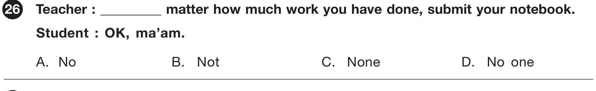
For questions 26 to 30, choose the correct option to complete each conversation.
Teacher : _________ matter how much work you have done, submit your notebook.
Student : OK, ma’am.
No
Not
None
No one
The correct option “no” is to be used because the phrase “no matter” means ‘it is not important, or does not make a difference’.
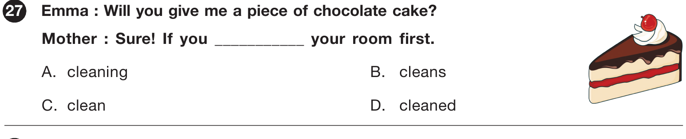
For questions 26 to 30, choose the correct option to complete each conversation.
Emma : Will you give me a piece of chocolate cake?
Mother : Sure! If you ___________ your room first.
cleaning
cleans
clean
cleaned
The verb form “clean” is to be used because when we use ‘if’ to talk about something that has to happen first, we use the base form of the verb (here, clean).
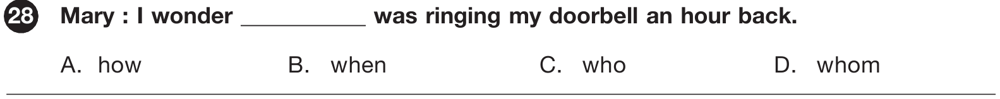
For questions 26 to 30, choose the correct option to complete each conversation.
Mary : I wonder ___________ was ringing my doorbell an hour back.
how
when
who
whom
The relative pronoun “who” is to be used to refer to a person who is not known.
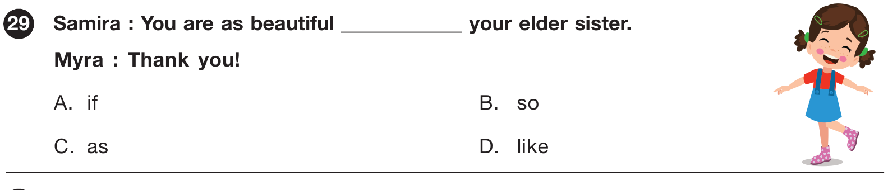
For questions 26 to 30, choose the correct option to complete each conversation.
Samira : You are as beautiful ____________ your elder sister.
Myra : Thank you!
if
as
like
The suitable option “as” is to be used while making comparisons to show equality of degree.
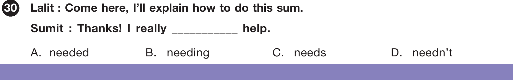
For questions 26 to 30, choose the correct option to complete each conversation.
Lalit : Come here, I’ll explain how to do this sum.
Sumit : Thanks! I really ___________ help.
needed
needing
needs
needn’t
The verb form “needed” is to be used to make the conversation sound natural and grammatically correct.
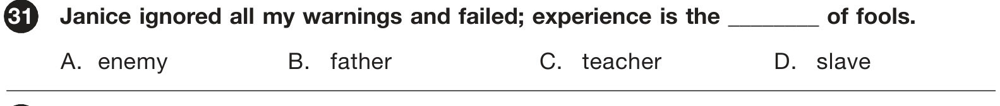
For questions 31 and 32, choose the correct option to fill in the blank.
Janice ignored all my warnings and failed; experience is the ________ of fools.
enemy
father
teacher
slave
The proverb “experience is the teacher of fools” means that ‘foolish people learn only from their own mistakes and not from advice’.
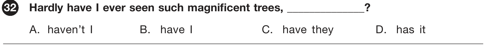
For questions 31 and 32, choose the correct option to fill in the blank.
Hardly have I ever seen such magnificent trees, ______________?
haven’t I
have I
have they
has it
The question tag “have I” is to be used because a negative statement follows a positive tag.
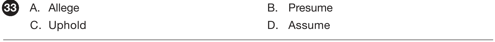
Choose the correct synonym of validate.
Allege
Presume
Uphold
Assume
The correct synonym of “validate” is “uphold” because they both mean ‘to approve or confirm something as correct or acceptable’.
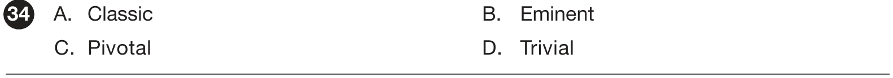
Choose the correct antonym of iconic.
Classic
Eminent
Pivotal
Trivial
The correct antonym of “iconic” is “trivial” because iconic means ‘very important or famous’, while trivial means ‘unimportant or ordinary’.
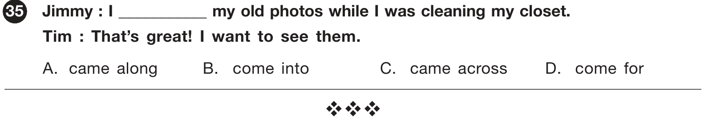
Choose the correct option to complete the conversation.
Jimmy : I ___________ my old photos while I was cleaning my closet.
Tim : That’s great! I want to see them.
came along
came across
come for
The phrasal verb “came across” means to meet or find someone or something by chance.